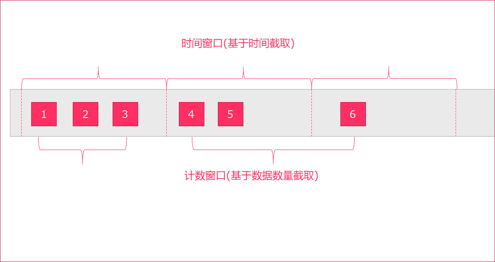
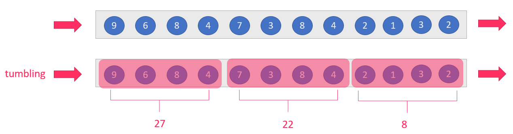
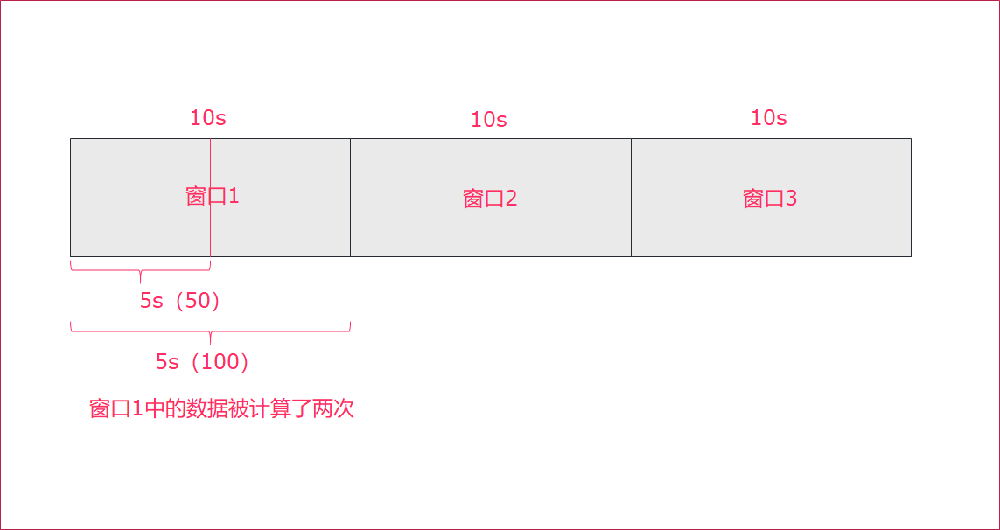
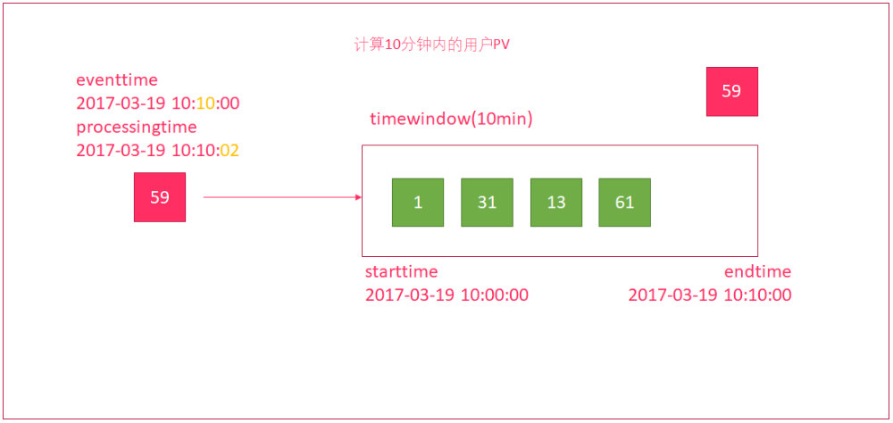

Flink流处理
学习目标
- Flink流处理的Source
- 基于集合
- 基于文件
- 基于Socket
- 自定义数据源
- 使用Kafka作为数据源
- 使用MySql作为数据源
- Flink流处理的Transformation
- keyby
- connect
- split和select
- Flink流处理的Sink
- sink到kafka
- sink到mysql
- Flink的Window操作
- 时间窗口
- 计数窗口
- 自定义窗口
- Flink的水印机制
1. 输入数据集DataSource
Flink 中你可以使用 StreamExecutionEnvironment.getExecutionEnvironment创建流处理的执行环境
Flink 中你可以使用 StreamExecutionEnvironment.addSource(source) 来为你的程序添加数据来源。
Flink 已经提供了若干实现好了的 source functions，当然你也可以通过实现 SourceFunction来自定义非并行的source或者实现 ParallelSourceFunction 接口或者扩展 RichParallelSourceFunction 来自定义并行的 source。
Flink在流处理上的source和在批处理上的source基本一致。大致有4大类：
基于本地集合的source（Collection-based-source）
基于文件的source（File-based-source）- 读取文本文件，即符合 TextInputFormat 规范的文件，并将其作为字符串返回
基于网络套接字的source（Socket-based-source）- 从 socket 读取。元素可以用分隔符切分。
自定义的source（Custom-source）
1.1. 基于集合的source
//创建流处理的执行环境
val env = StreamExecutionEnvironment.getExecutionEnvironment
//使用env.fromElements()来创建数据源
val dataStream: DataStream[String] = env.fromElements("spark", "flink")
import org.apache.flink.streaming.api.scala.{DataStream, StreamExecutionEnvironment}
import org.apache.flink.streaming.api.scala._
import scala.collection.immutable.{Queue, Stack}
import scala.collection.mutable
import scala.collection.mutable.{ArrayBuffer, ListBuffer}
object StreamingDemoFromCollectionSource {
def main(args: Array[String]): Unit = {
val senv = StreamExecutionEnvironment.getExecutionEnvironment
//0.用element创建DataStream(fromElements)
val ds0: DataStream[String] = senv.fromElements("spark", "flink")
ds0.print()
//1.用Tuple创建DataStream(fromElements)
val ds1: DataStream[(Int, String)] = senv.fromElements((1, "spark"), (2, "flink"))
ds1.print()
//2.用Array创建DataStream
val ds2: DataStream[String] = senv.fromCollection(Array("spark", "flink"))
ds2.print()
//3.用ArrayBuffer创建DataStream
val ds3: DataStream[String] = senv.fromCollection(ArrayBuffer("spark", "flink"))
ds3.print()
//4.用List创建DataStream
val ds4: DataStream[String] = senv.fromCollection(List("spark", "flink"))
ds4.print()
//5.用List创建DataStream
val ds5: DataStream[String] = senv.fromCollection(ListBuffer("spark", "flink"))
ds5.print()
//6.用Vector创建DataStream
val ds6: DataStream[String] = senv.fromCollection(Vector("spark", "flink"))
ds6.print()
//7.用Queue创建DataStream
val ds7: DataStream[String] = senv.fromCollection(Queue("spark", "flink"))
ds7.print()
//8.用Stack创建DataStream
val ds8: DataStream[String] = senv.fromCollection(Stack("spark", "flink"))
ds8.print()
//9.用Stream创建DataStream（Stream相当于lazy List，避免在中间过程中生成不必要的集合）
val ds9: DataStream[String] = senv.fromCollection(Stream("spark", "flink"))
ds9.print()
//10.用Seq创建DataStream
val ds10: DataStream[String] = senv.fromCollection(Seq("spark", "flink"))
ds10.print()
//11.用Set创建DataStream(不支持)
//val ds11: DataStream[String] = senv.fromCollection(Set("spark", "flink"))
//ds11.print()
//12.用Iterable创建DataStream(不支持)
//val ds12: DataStream[String] = senv.fromCollection(Iterable("spark", "flink"))
//ds12.print()
//13.用ArraySeq创建DataStream
val ds13: DataStream[String] = senv.fromCollection(mutable.ArraySeq("spark", "flink"))
ds13.print()
//14.用ArrayStack创建DataStream
val ds14: DataStream[String] = senv.fromCollection(mutable.ArrayStack("spark", "flink"))
ds14.print()
//15.用Map创建DataStream(不支持)
//val ds15: DataStream[(Int, String)] = senv.fromCollection(Map(1 -> "spark", 2 -> "flink"))
//ds15.print()
//16.用Range创建DataStream
val ds16: DataStream[Int] = senv.fromCollection(Range(1, 9))
ds16.print()
//17.用fromElements创建DataStream
val ds17: DataStream[Long] = senv.generateSequence(1, 9)
ds17.print()
senv.execute(this.getClass.getName)
}
}
1.2. 基于文件的source
Flink的流处理可以直接通过readTextFile()方法读取文件来创建数据源,方法如下:
object DataSource_CSV {
def main(args: Array[String]): Unit = {
// 1. 获取流处理运行环境
val env = StreamExecutionEnvironment.getExecutionEnvironment
// 2. 读取文件
val textDataStream: DataStream[String] = env.readTextFile("hdfs://node01:8020/flink-datas/score.csv")
// 3. 打印数据
textDataStream.print()
// 4. 执行程序
env.execute()
}
}
1.3. 基于网络套接字的source
上面两种方式创建的数据源一般都是固定的.如果需要源源不断的产生数据,可以使用socket的方式来获取数据,通过调用socketTextStream()方法
示例
编写Flink程序，接收socket的单词数据，并以空格进行单词拆分打印。
步骤
获取流处理运行环境
构建socket流数据源，并指定IP地址和端口号
对接收到的数据进行空格拆分
打印输出
启动执行
在Linux中，使用
nc -lk 端口号监听端口，并发送单词安装nc: yum install -y nc
nc -lk 9999 监听9999端口的信息
代码
object SocketSource {
def main(args: Array[String]): Unit = {
//1. 获取流处理运行环境
val env = StreamExecutionEnvironment.getExecutionEnvironment
// 2. 构建socket流数据源，并指定IP地址和端口号
// hadoop hadoop hive spark
val socketDataStream: DataStream[String] = env.socketTextStream("node01", 9999)
// 3. 转换,以空格拆分单词
val mapDataSet: DataStream[String] = socketDataStream.flatMap(_.split(" "))
// 4. 打印输出
mapDataSet.print()
// 5. 启动执行
env.execute("WordCount_Stream")
}
}
1.4. 自定义source
我们也可以通过去实现SourceFunction或者它的子类RichSourceFunction类来自定义实现一些自定义的source，Kafka创建source数据源类FlinkKafkaConsumer010也是采用类似的方式。
1.4.1. 自定义数据源
示例:
自定义数据源, 每1秒钟随机生成一条订单信息(订单ID、用户ID、订单金额、时间戳)
要求:
随机生成订单ID（UUID）
随机生成用户ID（0-2）
随机生成订单金额（0-100）
时间戳为当前系统时间
开发步骤:
创建订单样例类
获取流处理环境
创建自定义数据源
- 循环1000次
- 随机构建订单信息
- 上下文收集数据
- 每隔一秒执行一次循环
打印数据
执行任务
代码:
object StreamFlinkSqlDemo {
// 创建一个订单样例类Order，包含四个字段（订单ID、用户ID、订单金额、时间戳）
case class Order(id: String, userId: Int, money: Long, createTime: Long)
def main(args: Array[String]): Unit = {
// 1. 获取流处理运行环境
val env = StreamExecutionEnvironment.getExecutionEnvironment
// 2. 创建一个自定义数据源
val orderDataStream = env.addSource(new RichSourceFunction[Order] {
override def run(ctx: SourceFunction.SourceContext[Order]): Unit = {
// 使用for循环生成1000个订单
for (i <- 0 until 1000) {
// 随机生成订单ID（UUID）
val id = UUID.randomUUID().toString
// 随机生成用户ID（0-2）
val userId = Random.nextInt(3)
// 随机生成订单金额（0-100）
val money = Random.nextInt(101)
// 时间戳为当前系统时间
val timestamp = System.currentTimeMillis()
// 收集数据
ctx.collect(Order(id, userId, money, timestamp))
// 每隔1秒生成一个订单
TimeUnit.SECONDS.sleep(1)
}
}
override def cancel(): Unit = ()
})
// 3. 打印数据
orderDataStream.print()
// 4. 执行程序
env.execute()
}
}
1.4.2. 使用Kafka作为数据源
我们可以通过使用FlinkKafkaConsumer010来从Kafka中获取消息:
示例:
使用Flink流处理方式,读取Kafka的数据,并打印.
开发步骤:
- 创建流处理环境
- 指定链接kafka相关信息
- 创建kafka数据流(FlinkKafkaConsumer010)
- 添加Kafka数据源
- 打印数据
- 执行任务
Kafka相关操作:
创建topic
kafka-topics.sh --create --partitions 3 --replication-factor 2 --topic kafkatopic --zookeeper node01:2181,node02:2181,node03:2181
模拟生产者
kafka-console-producer.sh --broker-list node01:9092,node02:9092,node03:9092 --topic kafkatopic
模拟消费者
kafka-console-consumer.sh --from-beginning --topic kafkatopic --zookeeper node01:2181,node02:2181,node03:2181
代码:
import java.util.Properties
import org.apache.flink.api.common.serialization.SimpleStringSchema
import org.apache.flink.streaming.api.scala.{DataStream, StreamExecutionEnvironment}
import org.apache.flink.api.scala._
import org.apache.flink.streaming.connectors.kafka.FlinkKafkaConsumer010
import org.apache.kafka.clients.CommonClientConfigs
object DataSource_kafka {
def main(args: Array[String]): Unit = {
//1. 创建流处理环境
val env = StreamExecutionEnvironment.getExecutionEnvironment
//2. 指定kafka数据流的相关信息
val kafkaCluster = "node01:9092,node02:9092,node03:9092"
val kafkaTopicName = "kafkatopic"
//3. 创建kafka数据流
val properties = new Properties()
properties.setProperty(CommonClientConfigs.BOOTSTRAP_SERVERS_CONFIG, kafkaCluster)
val kafka010 = new FlinkKafkaConsumer010[String](kafkaTopicName, new SimpleStringSchema(), properties)
//4. 添加数据源addSource(kafka010)
val text: DataStream[String] = env.addSource(kafka010)
//5. 打印数据
text.print()
//6. 执行任务
env.execute("flink-kafka-wordcunt")
}
}
1.4.3. 使用MySQL作为数据源
上面我们已经使用了自定义数据源和Flink自带的Kafka source，那么接下来就模仿着写一个从 MySQL 中读取数据的 Source。
示例
自定义数据源, 读取MySql数据库(test)表(user)数据.
| id | username | password | name |
|---|---|---|---|
| 1 | zhangsan | 111111 | 张三 |
| 2 | lisi | 222222 | 李四 |
| 3 | wangwu | 333333 | 王五 |
| 4 | zhaoliu | 444444 | 赵六 |
| 5 | tianqi | 555555 | 田七 |
相关依赖
<!-- 指定mysql-connector的依赖 -->
<dependency>
<groupId>mysql</groupId>
<artifactId>mysql-connector-java</artifactId>
<version>5.1.38</version>
</dependency>
开发步骤
- 自定义Source,继承自RichSourceFunction
- 实现run方法
- 加载驱动
- 创建连接
- 创建PreparedStatement
- 执行查询
- 遍历查询结果,收集数据
- 使用自定义Source
- 打印结果
- 执行任务
代码
package com.itheima.stream
import java.sql.{Connection, DriverManager, PreparedStatement}
import org.apache.flink.api.scala._
import org.apache.flink.configuration.Configuration
import org.apache.flink.streaming.api.functions.source.RichSourceFunction
import org.apache.flink.streaming.api.functions.source.SourceFunction.SourceContext
import org.apache.flink.streaming.api.scala.{DataStream, StreamExecutionEnvironment}
object DataSource_mysql {
def main(args: Array[String]): Unit = {
// 1. 创建流处理环境
val env = StreamExecutionEnvironment.getExecutionEnvironment
// 2. 设置并行度
env.setParallelism(1)
// 3. 添加自定义MySql数据源
val source = env.addSource(new MySql_source)
// 4. 打印结果
source.print()
// 5. 执行任务
env.execute()
}
}
class MySql_source extends RichSourceFunction[(Int, String, String, String)] {
override def run(ctx: SourceContext[(Int, String, String, String)]): Unit = {
// 1. 加载MySql驱动
Class.forName("com.mysql.jdbc.Driver")
// 2. 链接MySql
var connection: Connection = DriverManager.getConnection("jdbc:mysql:///test", "root", "123456")
// 3. 创建PreparedStatement
val sql = "select id , username , password , name from user"
var ps: PreparedStatement = connection.prepareStatement(sql)
// 4. 执行Sql查询
val queryRequest = ps.executeQuery()
// 5. 遍历结果
while (queryRequest.next()) {
val id = queryRequest.getInt("id")
val username = queryRequest.getString("username")
val password = queryRequest.getString("password")
val name = queryRequest.getString("name")
// 收集数据
ctx.collect((id, username, password, name))
}
}
override def cancel(): Unit = {}
}
2. DataStream的Transformation
和DataSet批处理一样，DataStream也包括一系列的Transformation操作.
流数据处理和批数据处理有很多操作是类似的，所以就不再一 一讲解。我们主要讲解，和批处理不一样的一些操作。
2.1. keyBy
按照指定的key来进行分流，类似于批处理中的groupBy。可以按照索引名/字段名来指定分组的字段.
示例
读取socket数据源, 进行单词的计数
开发步骤
- 获取流处理运行环境
- 设置并行度
- 获取数据源
- 转换操作
- 以空白进行分割
- 给每个单词计数1
- 根据单词分组
- 求和
- 打印到控制台
- 执行任务
代码
/**
* KeyBy算子的使用
*/
object Transformation_KeyBy {
def main(args: Array[String]): Unit = {
// 1.获取流处理运行环境
val senv = StreamExecutionEnvironment.getExecutionEnvironment
// 2.设置并行度
senv.setParallelism(3)
//3. 获取Socket数据源
val stream = senv.socketTextStream("node01", 9999, '\n')
//4. 转换操作,以空格切分,每个元素计数1,以单词分组,累加
val text = stream.flatMap(_.split("\\s"))
.map((_,1))
//TODO 逻辑上将一个流分成不相交的分区，每个分区包含相同键的元素。在内部，这是通过散列分区来实现的
.keyBy(_._1)
//TODO 这里的sum并不是分组去重后的累加值，如果统计去重后累加值，则使用窗口函数
.sum(1)
//5. 打印到控制台
text.print()
//6. 执行任务
senv.execute()
}
}
2.2. Connect
Connect用来将两个DataStream组装成一个ConnectedStreams。它用了两个泛型，即不要求两个dataStream的element是同一类型。这样我们就可以把不同的数据组装成同一个结构.
示例
读取两个不同类型的数据源，使用connect进行合并打印。
开发步骤
- 创建流式处理环境
- 添加两个自定义数据源
- 使用connect合并两个数据流,创建ConnectedStreams对象
- 遍历ConnectedStreams对象,转换为DataStream
- 打印输出,设置并行度为1
- 执行任务
自定义数据源
/**
* 创建自定义并行度为1的source
* 实现从1开始产生递增数字
*/
class MyLongSourceScala extends SourceFunction[Long] {
var count = 1L
var isRunning = true
override def run(ctx: SourceContext[Long]) = {
while (isRunning) {
ctx.collect(count)
count += 1
TimeUnit.SECONDS.sleep(1)
}
}
override def cancel() = {
isRunning = false
}
}
/**
* 创建自定义并行度为1的source
* 实现从1开始产生递增字符串
*/
class MyStringSourceScala extends SourceFunction[String] {
var count = 1L
var isRunning = true
override def run(ctx: SourceContext[String]) = {
while (isRunning) {
ctx.collect("str_" + count)
count += 1
TimeUnit.SECONDS.sleep(1)
}
}
override def cancel() = {
isRunning = false
}
}
代码
object StreamingDemoConnectScala {
def main(args: Array[String]): Unit = {
// 1. 创建流式处理环境
val env = StreamExecutionEnvironment.getExecutionEnvironment
// 2. 添加两个自定义数据源
val text1: DataStream[Long] = env.addSource(new MyLongSourceScala)
val text2: DataStream[String] = env.addSource(new MyStringSourceScala)
// 3. 使用connect合并两个数据流,创建ConnectedStreams对象
val connectedStreams: ConnectedStreams[Long, String] = text1.connect(text2)
// 4. 遍历ConnectedStreams对象,转换为DataStream
val result: DataStream[Any] = connectedStreams.map(line1 => {
line1
}, line2 => {
line2
})
// 5. 打印输出,设置并行度为1
result.print().setParallelism(1)
// 6. 执行任务
env.execute("StreamingDemoWithMyNoParallelSourceScala")
}
}
2.3. split和select
split就是将一个DataStream分成多个流，用SplitStream来表示
DataStream → SplitStream
select就是获取分流后对应的数据，跟split搭配使用，从SplitStream中选择一个或多个流
SplitStream → DataStream
示例
加载本地集合(1,2,3,4,5,6), 使用split进行数据分流,分为奇数和偶数. 并打印奇数结果
开发步骤
- 创建流处理环境
- 设置并行度
- 加载本地集合
- 数据分流,分为奇数和偶数
- 获取分流后的数据
- 打印数据
- 执行任务
代码：
/**
* 演示Split和Select方法
* Split: DataStream->SplitStream
* Select: SplitStream->DataStream
*/
object SplitAndSelect {
def main(args: Array[String]): Unit = {
// 1. 创建批处理环境
val env = StreamExecutionEnvironment.getExecutionEnvironment
// 2. 设置并行度
env.setParallelism(1)
// 3. 加载本地集合
val elements: DataStream[Int] = env.fromElements(1, 2, 3, 4, 5, 6)
// 4. 数据分流,分为奇数和偶数
val split_data: SplitStream[Int] = elements.split(
(num: Int) =>
num % 2 match {
case 0 => List("even")
case 1 => List("odd")
}
)
// 5. 获取分流后的数据
val even: DataStream[Int] = split_data.select("even")
val odd: DataStream[Int] = split_data.select("odd")
val all: DataStream[Int] = split_data.select("odd", "even")
// 6. 打印数据
odd.print()
// 7. 执行任务
env.execute()
}
}
3. Flink在流处理上常见的sink
Flink将数据进行sink操作到本地文件/本地集合/HDFS等和之前的批处理操作一致.这里重点说下sink到Kafka以及MySQL的操作
3.1. Sink到Kafka
kafka-console-consumer.sh --from-beginning --topic test2 --zookeeper node01:2181,node02:2181,node03:2181
示例
读取MySql的数据, 落地到Kafka中
开发步骤
- 创建流处理环境
- 设置并行度
- 添加自定义MySql数据源
- 转换元组数据为字符串
- 构建
FlinkKafkaProducer010 - 添加sink
- 执行任务
代码
object DataSink_kafka {
def main(args: Array[String]): Unit = {
// 1. 创建流处理环境
val env = StreamExecutionEnvironment.getExecutionEnvironment
// 2. 设置并行度
env.setParallelism(1)
// 3. 添加自定义MySql数据源
val source: DataStream[(Int, String, String, String)] = env.addSource(new MySql_source)
// 4. 转换元组数据为字符串
val strDataStream: DataStream[String] = source.map(
line => line._1 + line._2 + line._3 + line._4
)
//5. 构建FlinkKafkaProducer010
val p: Properties = new Properties
p.setProperty("bootstrap.servers", "node01:9092,node02:9092,node03:9092")
val sink = new FlinkKafkaProducer010[String]("test2", new SimpleStringSchema(), p)
// 6. 添加sink
strDataStream.addSink(sink)
// 7. 执行任务
env.execute("flink-kafka-wordcount")
}
}
3.2. Sink到MySQL
示例
加载下列本地集合,导入MySql中
List(
(10, "dazhuang", "123456", "大壮"),
(11, "erya", "123456", "二丫"),
(12, "sanpang", "123456", "三胖")
)
开发步骤
- 创建流执行环境
- 准备数据
- 添加sink
- 构建自定义Sink,继承自
RichSinkFunction - 重写
open方法,获取Connection和PreparedStatement - 重写
invoke方法,执行插入操作 - 重写
close方法,关闭连接操作
- 构建自定义Sink,继承自
- 执行任务
代码
object DataSink_MySql {
def main(args: Array[String]): Unit = {
//1.创建流执行环境
val env = StreamExecutionEnvironment.getExecutionEnvironment
//2.准备数据
val value: DataStream[(Int, String, String, String)] = env.fromCollection(List(
(10, "dazhuang", "123456", "大壮"),
(11, "erya", "123456", "二丫"),
(12, "sanpang", "123456", "三胖")
))
// 3. 添加sink
value.addSink(new MySql_Sink)
//4.触发流执行
env.execute()
}
}
// 自定义落地MySql的Sink
class MySql_Sink extends RichSinkFunction[(Int, String, String, String)] {
private var connection: Connection = null
private var ps: PreparedStatement = null
override def open(parameters: Configuration): Unit = {
//1:加载驱动
Class.forName("com.mysql.jdbc.Driver")
//2：创建连接
connection = DriverManager.getConnection("jdbc:mysql:///test", "root", "123456")
//3:获得执行语句
val sql = "insert into user(id , username , password , name) values(?,?,?,?);"
ps = connection.prepareStatement(sql)
}
override def invoke(value: (Int, String, String, String)): Unit = {
try {
//4.组装数据，执行插入操作
ps.setInt(1, value._1)
ps.setString(2, value._2)
ps.setString(3, value._3)
ps.setString(4, value._4)
ps.executeUpdate()
} catch {
case e: Exception => println(e.getMessage)
}
}
//关闭连接操作
override def close(): Unit = {
if (connection != null) {
connection.close()
}
if (ps != null) {
ps.close()
}
}
}
4. Flink的Window操作
Flink 认为 Batch 是 Streaming 的一个特例，所以 Flink 底层引擎是一个流式引擎，在上面实现了流处理和批处理。而窗口（window）就是从 Streaming 到 Batch 的一个桥梁。Flink 提供了非常完善的窗口机制。
4.1. 什么是window
在流处理应用中，数据是连续不断的，因此我们不可能等到所有数据都到了才开始处理。当然我们可以每来一个消息就处理一次，但是有时我们需要做一些聚合类的处理，例如：在过去的1分钟内有多少用户点击了我们的网页。在这种情况下，我们必须定义一个窗口，用来收集最近一分钟内的数据，并对这个窗口内的数据进行计算。
如果在数据流上，截取固定大小的一部分，这部分是可以进行统计的。 截取方式主要有两种:
- 根据
时间进行截取(time-driven-window)，比如每1分钟统计一次或每10分钟统计一次。- 根据
消息数量进行截取(data-driven-window)，比如每5个数据统计一次或每50个数据统计一次。

4.2. 时间窗口
我们先提出一个问题：统计经过某红绿灯的汽车数量之和？
假设在一个红绿灯处，我们每隔15秒统计一次通过此红绿灯的汽车数量，如下图：
 可以把汽车的经过看成一个流，无穷的流，不断有汽车经过此红绿灯，因此无法统计总共的汽车数量。但是，我们可以换一种思路，每隔15秒，我们都将与上一次的结果进行sum操作（滑动聚合, 但是这个结果似乎还是无法回答我们的问题，根本原因在于流是无界的，我们不能限制流，但可以在有一个
可以把汽车的经过看成一个流，无穷的流，不断有汽车经过此红绿灯，因此无法统计总共的汽车数量。但是，我们可以换一种思路，每隔15秒，我们都将与上一次的结果进行sum操作（滑动聚合, 但是这个结果似乎还是无法回答我们的问题，根本原因在于流是无界的，我们不能限制流，但可以在有一个有界的范围内处理无界的流数据。
因此，我们需要换一个问题的提法：每分钟经过某红绿灯的汽车数量之和？
这个问题，就相当于一个定义了一个Window（窗口），window的界限是1分钟，且每分钟内的数据互不干扰，因此也可以称为翻滚（不重合）窗口，如下图：

第一分钟的数量为8，第二分钟是22，第三分钟是27。。。这样，1个小时内会有60个window。
再考虑一种情况，每30秒统计一次过去1分钟的汽车数量之和：
 此时，window出现了重合。这样，1个小时内会有120个window。
此时，window出现了重合。这样，1个小时内会有120个window。
4.2.1. tumbling-time-window (翻滚窗口-无重叠数据)
按照时间来进行窗口划分,每次窗口的滑动距离等于窗口的长度,这样数据不会重复计算,我们参考上面的案例
代码如下:
object StreamingTumblingTimeWindow {
def main(args: Array[String]): Unit = {
//1.创建运行环境
val env: StreamExecutionEnvironment = StreamExecutionEnvironment.getExecutionEnvironment
//2.定义数据流来源
val textStream = env.socketTextStream("node01", 9999)
//3.转换数据格式，text->CarWc
val data = textStream.map(line => {
val array = line.split(",")
WordCountCart(array(0).toInt, array(1).toInt)
})
//4.执行统计操作，每个sensorId一个tumbling窗口，窗口的大小为5秒
//也就是说，每5秒钟统计一次，在这过去的5秒钟内，各个路口通过红绿灯汽车的数量。
val keyByData: KeyedStream[WordCountCart, Int] = data.keyBy(line => line.sen)
//无重叠数据，所以只需要给一个参数即可，每5秒钟统计一下各个路口通过红绿灯汽车的数量
val result = keyByData.timeWindow(Time.seconds(5)).sum(1)
//5、显示统计结果
result.print()
//6、触发流计算
env.execute()
}
}
/**
* @param sen 哪个红绿灯
* @param cardNum 多少辆车
*/
case class WordCountCart(sen: Int, cardNum: Int)
4.2.2. sliding-time-window (滑动窗口-有重叠数据)
按照时间来进行窗口划分,每次窗口的滑动距离小于窗口的长度,这样数据就会有一部分重复计算,我们参考上面的案例

代码如下:
import org.apache.flink.streaming.api.scala.{KeyedStream, StreamExecutionEnvironment}
import org.apache.flink.streaming.api.windowing.time.Time
import org.apache.flink.streaming.api.scala._
/**
* 有重叠数据
*/
object StreamingTimeSlidingWindow {
def main(args: Array[String]): Unit = {
//1.创建运行环境
val env: StreamExecutionEnvironment = StreamExecutionEnvironment.getExecutionEnvironment
//2.定义数据流来源
val textStream = env.socketTextStream("node01", 9000)
//3.转换数据格式，text->CarWc
val data = textStream.map(line => {
val array = line.split(",")
WordCountCart(array(0).toInt, array(1).toInt)
})
//4.执行统计操作，每个sensorId一个tumbling窗口，窗口的大小为5秒
//也就是说，每2秒钟统计一次，在这过去的10秒钟内，各个路口通过红绿灯汽车的数量。
val keyByData: KeyedStream[WordCountCart, Int] = data.keyBy(line => line.sen)
val result = keyByData.timeWindow(Time.seconds(10), Time.seconds(2)).sum(1)
//5、显示统计结果
result.print()
//6、触发流计算
env.execute()
}
}
4.2.3. 小结
- 如果窗口计算时间 > 窗口时间，会出现数据丢失
- 如果窗口计算时间 < 窗口时间，会出现数据重复计算
- 如果窗口计算时间 = 窗口时间，数据不会被重复计算
窗口计算时间 > 窗口时间

窗口计算时间 < 窗口时间
窗口计算时间 = 窗口时间

4.3. Count-Window
4.3.1 tumbling-count-window (无重叠数据)
按照个数进行统计，比如：
每个路口分别统计，收到关于它的5条消息时,统计在最近5条消息中，各自路口通过的汽车数量
代码如下:
import org.apache.flink.streaming.api.scala.{KeyedStream, StreamExecutionEnvironment}
import org.apache.flink.streaming.api.scala._
/**
* 无重叠数据
*/
object StreamingCountTumblingWindow {
def main(args: Array[String]): Unit = {
//1.创建运行环境
val env: StreamExecutionEnvironment = StreamExecutionEnvironment.getExecutionEnvironment
//2.定义数据流来源
val textStream = env.socketTextStream("node01", 9999)
//3.转换数据格式，text->CountCart
val data = textStream.map(line => {
val array = line.split(",")
CountCart(array(0).toInt, array(1).toInt)
})
//4.执行统计操作，每个sensorId一个tumbling窗口，窗口的大小为5秒
//按照key进行收集，对应的key出现的次数达到5次作为一个结果
val keyByData: KeyedStream[CountCart, Int] = data.keyBy(line => line.sen)
//相同的key出现三次才做一次sum聚合
val result = keyByData.countWindow(3).sum(1)
//5、显示统计结果
result.print()
//6、触发流计算
env.execute()
}
}
case class CountCart(sen:Int, cardNum:Int)
4.3.2 sliding-count-window (有重叠数据)
同样也是窗口长度和滑动窗口的操作：窗口长度是5，滑动长度是3
import org.apache.flink.streaming.api.scala.{KeyedStream, StreamExecutionEnvironment}
import org.apache.flink.streaming.api.windowing.time.Time
import org.apache.flink.streaming.api.scala._
/**
* 有重叠数据
*/
object StreamingCountSlidingWindow {
def main(args: Array[String]): Unit = {
//1.创建运行环境
val env: StreamExecutionEnvironment = StreamExecutionEnvironment.getExecutionEnvironment
//2.定义数据流来源
val textStream = env.socketTextStream("node01", 9000)
//3.转换数据格式，text->CarWc
val data = textStream.map(line => {
val array = line.split(",")
CountCart(array(0).toInt, array(1).toInt)
})
//4.执行统计操作，每个sensorId一个sliding窗口，窗口大小3条数据,窗口滑动为3条数据
//也就是说，每个路口分别统计，收到关于它的3条消息时统计在最近5条消息中，各自路口通过的汽车数量
val keyByData: KeyedStream[CountCart, Int] = data.keyBy(line => line.sen)
val result = keyByData.countWindow(5, 3).sum(1)
//5、显示统计结果
result.print()
//6、触发流计算
env.execute()
}
}
4.4. Window apply
apply方法可以进行一些自定义处理，通过匿名内部类的方法来实现。当有一些复杂计算时使用。
用法
- 实现
WindowFunction类 - 指定该类的泛型为
[输入数据类型, 输出数据类型, keyBy中使用分组字段的类型, 窗口类型]
示例
使用apply方法来实现单词统计
步骤
- 获取流处理运行环境
- 构建socket流数据源，并指定IP地址和端口号
- 对接收到的数据转换成单词元组
- 使用
keyBy进行分流（分组） - 使用
timeWinodw指定窗口的长度（每3秒计算一次） - 实现一个WindowFunction匿名内部类
- 在apply方法中实现聚合计算
- 使用Collector.collect收集数据
- 打印输出
- 启动执行
- 在Linux中，使用
nc -lk 端口号监听端口，并发送单词
参考代码
import org.apache.flink.streaming.api.scala.{DataStream, StreamExecutionEnvironment}
import org.apache.flink.api.scala._
import org.apache.flink.streaming.api.scala.function.WindowFunction
import org.apache.flink.streaming.api.windowing.time.Time
import org.apache.flink.streaming.api.windowing.windows.TimeWindow
import org.apache.flink.util.Collector
object WindowApply {
def main(args: Array[String]): Unit = {
// 1. 获取流处理运行环境
val env = StreamExecutionEnvironment.getExecutionEnvironment
// 2. 构建socket流数据源，并指定IP地址和端口号
val socketDataStream = env.socketTextStream("node01", 9999)
// 3. 对接收到的数据转换成单词元组
val wordcountDataStream: DataStream[(String, Int)] = socketDataStream.flatMap {
text =>
text.split(" ").map(_ -> 1)
}
// 4. 使用`keyBy`进行分流（分组）
val groupedDataStream = wordcountDataStream.keyBy(_._1)
// 5. 使用`timeWinodw`指定窗口的长度（每3秒计算一次）
val windowedDataStream = groupedDataStream.timeWindow(Time.seconds(3))
// 6. 实现一个WindowFunction匿名内部类
val resultDataStream: DataStream[(String, Int)] = windowedDataStream.apply(new WindowFunction[(String, Int), (String, Int), String, TimeWindow] {
// - 在apply方法中实现聚合计算
override def apply(key: String, window: TimeWindow, input: Iterable[(String, Int)], out: Collector[(String, Int)]): Unit = {
val resultWordCount: (String, Int) = input.reduce {
(wc1, wc2) =>
(wc1._1, wc1._2 + wc2._2)
}
// - 使用Collector.collect收集数据
out.collect(resultWordCount)
}
})
// 7. 打印输出
resultDataStream.print()
// 8. 启动执行
env.execute("App")
}
}
5. Flink的水印机制
5.1. Flink流处理时间方式
EventTime[事件时间]
事件发生的时间，例如：点击网站上的某个链接的时间
IngestionTime[摄入时间]
某个Flink节点的source operator接收到数据的时间，例如：某个source消费到kafka中的数据
ProcessingTime[处理时间]
某个Flink节点执行某个operation的时间，例如：timeWindow接收到数据的时间

设置Flink流处理的时间类型（一般在生产环境中，都是使用EventTime来进行计算的）
// 设置为按照事件时间来进行计算
env.setStreamTimeCharacteristic(TimeCharacteristic.EventTime)
// 设置为按照处理时间来进行计算
env.setStreamTimeCharacteristic(TimeCharacteristic.ProcessingTime)
5.2. 水印机制产生的原因
在实际环境中，经常会出现，因为网络原因，数据有可能会延迟一会才到达Flink实时处理系统。
我们来设想一下下面这个场景:

- 使用时间窗口来统计10分钟内的用户流量
- 有一个时间窗口
- 开始时间为：2017-03-19 10:00:00
- 结束时间为：2017-03-19 10:10:00
- 有一个数据，因为网络延迟
- 事件发生的时间为：2017-03-19 10:
10:00 - 但进入到窗口的时间为：2017-03-19 10:10:
02，延迟了2秒中
- 事件发生的时间为：2017-03-19 10:
- 时间窗口并没有将
59这个数据计算进来，导致数据统计不正确
这种处理方式，根据消息进入到window时间，来进行计算。在网络有延迟的时候，会引起计算误差。
5.3. 使用水印解决网络延迟问题
水印（watermark）就是一个时间戳，Flink可以给数据流添加水印，可以理解为：收到一条消息后，额外给这个消息添加了一个时间字段，这就是添加水印。
- 水印并不会影响原有Eventtime
- 当数据流添加水印后，会按照水印时间来触发窗口计算
- 一般会设置水印时间，比Eventtime小几秒钟
- 当接收到的
水印时间 >= 窗口的endTime，则触发计算

示例
编写代码, 计算5秒内，用户的订单总额
订单数据（订单ID——UUID、用户ID、时间戳、订单金额），要求添加水印来解决网络延迟问题。
步骤
- 创建流处理运行环境
- 设置处理时间为
EventTime - 创建一个订单样例类
Order，包含四个字段（订单ID、用户ID、订单金额、时间戳） - 创建一个自定义数据源
- 随机生成订单ID（UUID）
- 随机生成用户ID（0-2）
- 随机生成订单金额（0-100）
- 时间戳为当前系统时间
- 每隔1秒生成一个订单
- 添加水印
- 允许延迟2秒
- 在获取水印方法中，打印水印时间、事件时间和当前系统时间
- 按照用户进行分流
- 设置5秒的时间窗口
- 进行聚合计算
- 打印结果数据
- 启动执行流处理
参考代码
import java.util.UUID
import java.util.concurrent.TimeUnit
import org.apache.commons.lang.time.FastDateFormat
import org.apache.flink.api.scala._
import org.apache.flink.streaming.api.TimeCharacteristic
import org.apache.flink.streaming.api.functions.AssignerWithPeriodicWatermarks
import org.apache.flink.streaming.api.functions.source.{RichSourceFunction, SourceFunction}
import org.apache.flink.streaming.api.scala.{DataStream, StreamExecutionEnvironment}
import org.apache.flink.streaming.api.watermark.Watermark
import org.apache.flink.streaming.api.windowing.time.Time
import scala.util.Random
object WaterMarkDemo {
// 3. 创建一个订单样例类`Order`，包含四个字段（订单ID、用户ID、订单金额、时间戳）
case class Order(orderId: String, userId: Int, money: Long, timestamp: Long)
def main(args: Array[String]): Unit = {
// 1. 创建流处理运行环境
val env = StreamExecutionEnvironment.getExecutionEnvironment
// 2. 设置处理时间为`EventTime`
env.setStreamTimeCharacteristic(TimeCharacteristic.EventTime)
// 4. 创建一个自定义数据源
val orderDataStream: DataStream[Order] = env.addSource(new RichSourceFunction[Order] {
var isRunning = true
override def run(ctx: SourceFunction.SourceContext[Order]): Unit = {
while (isRunning) {
// - 随机生成订单ID（UUID）
// - 随机生成用户ID（0-2）
// - 随机生成订单金额（0-100）
// - 时间戳为当前系统时间
// - 每隔1秒生成一个订单
val order = Order(UUID.randomUUID().toString, Random.nextInt(3), Random.nextInt(101), new java.util.Date().getTime)
ctx.collect(order)
TimeUnit.SECONDS.sleep(1)
}
}
override def cancel(): Unit = isRunning = false
})
// 5. 添加水印
val watermarkDataStream = orderDataStream.assignTimestampsAndWatermarks(new AssignerWithPeriodicWatermarks[Order] {
var currentTimestamp = 0L
val delayTime = 2000
override def getCurrentWatermark: Watermark = {
// - 允许延迟2秒
// - 在获取水印方法中，打印水印时间、当前事件时间和当前系统时间
val watermark = new Watermark(currentTimestamp - delayTime)
val dateFormat = FastDateFormat.getInstance("HH:mm:ss")
println(s"当前水印时间:${dateFormat.format(watermark.getTimestamp)}, 当前事件时间: ${dateFormat.format(currentTimestamp)}, 当前系统时间: ${dateFormat.format(System.currentTimeMillis())}")
watermark
}
override def extractTimestamp(element: Order, previousElementTimestamp: Long): Long = {
val timestamp = element.timestamp
currentTimestamp = Math.max(currentTimestamp, timestamp)
currentTimestamp
}
})
// 6. 按照用户进行分流
// 7. 设置5秒的时间窗口
// 8. 进行聚合计算
// 9. 打印结果数据
// 10. 启动执行流处理
watermarkDataStream.keyBy(_.userId)
.timeWindow(Time.seconds(5))
.reduce {
(order1, order2) =>
Order(order2.orderId, order2.userId, order1.money + order2.money, 0)
}
.print()
env.execute("WarkMarkDemoJob")
}
}